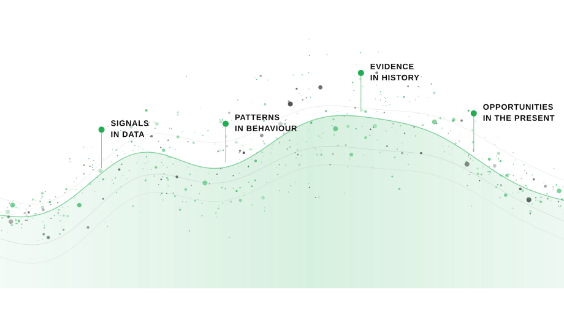
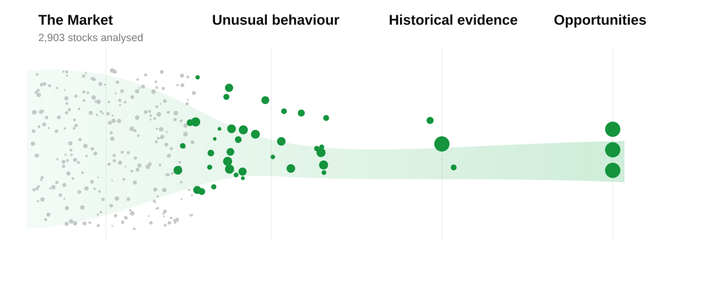
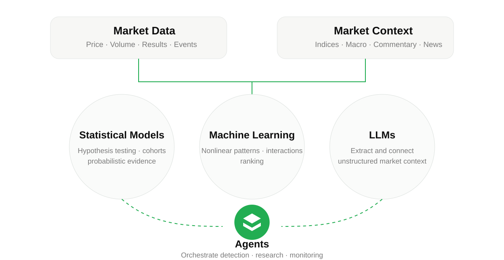
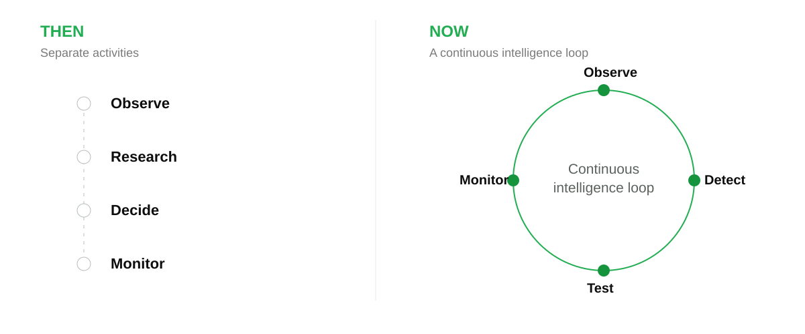

A Quant Platform for Indian Equities
Find what is working.Test whether it matters.Track whether it continues.
SriDah is a Quant Platform for Indian Equities, built to identify and monitor evidence-backed market opportunities.

Market DataStatistical ModelsMachine LearningLLMsAgents
From market to evidence
A large market.
A small set of evidence-backed opportunities.
SriDah searches across the market for unusual behaviour, then tests whether it has mattered historically.

2,903
NSE stocks analysed in one EBR study universe
325
Complete expansion → base → re-expansion sequences observed
30 of 46
Re-expanded in one discovery cohort where price was retained while participation normalised
Connected intelligence
From market data to market intelligence.
Statistical models establish evidence. Machine learning finds nonlinear structure. LLMs connect unstructured market context. Agents orchestrate detection, research and monitoring.

Why now
Market research can now become continuous.
Activities that once happened separately can increasingly operate as one connected research and monitoring loop.

What next
Starting with research.
Building towards continuous market intelligence.
Quant ResearchMeasure market behaviour and test hypotheses.
Market IntelligenceConnect validated evidence with current market context.
Decision SupportSurface evidence-backed opportunities for investigation.
Agentic ExecutionLonger-term direction: execution within predefined rules and risk limits.